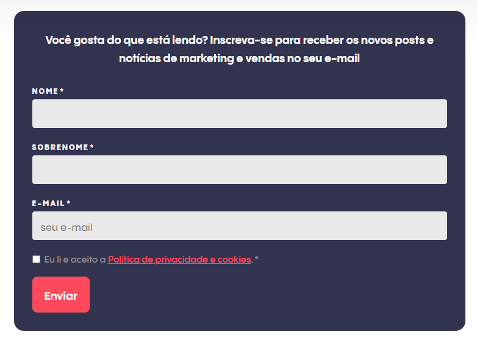

O Customer Relationship Management (CRM) é um sistema de gestão de relacionamento com o cliente, que coleta, integra e analisa dados relevantes sobre o público e o trabalho das equipes, possibilitando tomada de decisões mais assertivas, alinhamento de processos e aumento da taxa de conversão.
O SugarCRM é como um assistente virtual para empresas. Ele organiza informações importantes sobre os clientes,
como seus contatos, histórico de compras e interações anteriores. Com esses dados à mão, as empresas podem
entender melhor suas necessidades e oferecer um serviço mais personalizado.
Uma das grandes vantagens do SugarCRM é sua flexibilidade. Ele pode ser personalizado para atender às
necessidades específicas de diferentes empresas e setores. Isso significa que não importa se você é uma pequena
empresa local ou uma grande corporação internacional, o SugarCRM pode ser adaptado para se adequar ao seu
negócio.
No geral, ele é uma ferramenta poderosa para ajudar as empresas a construir relacionamentos mais fortes
com seus clientes, aumentar as vendas e impulsionar o crescimento empresarial.
Exemplo do que o SugarCRM pode fazer:

Como resultado, as empresas com um CRM têm o poder de oferecer um serviço responsivo e encantar clientes, o que acaba contribuindo para uma maior retenção deles.